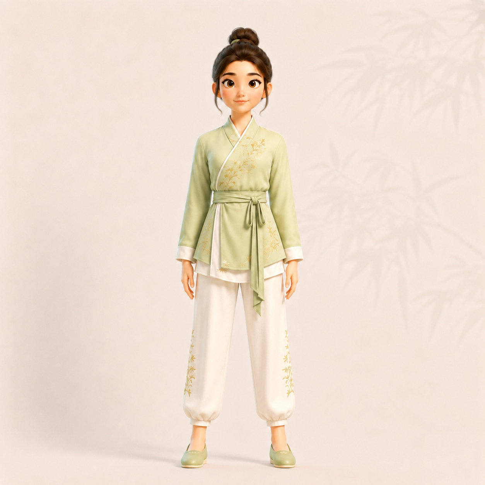
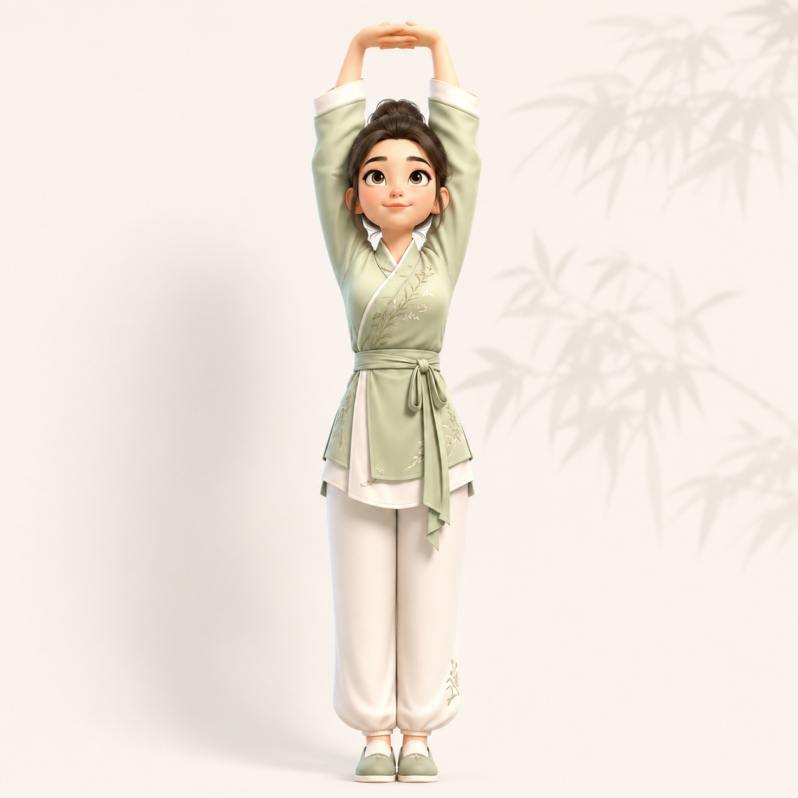
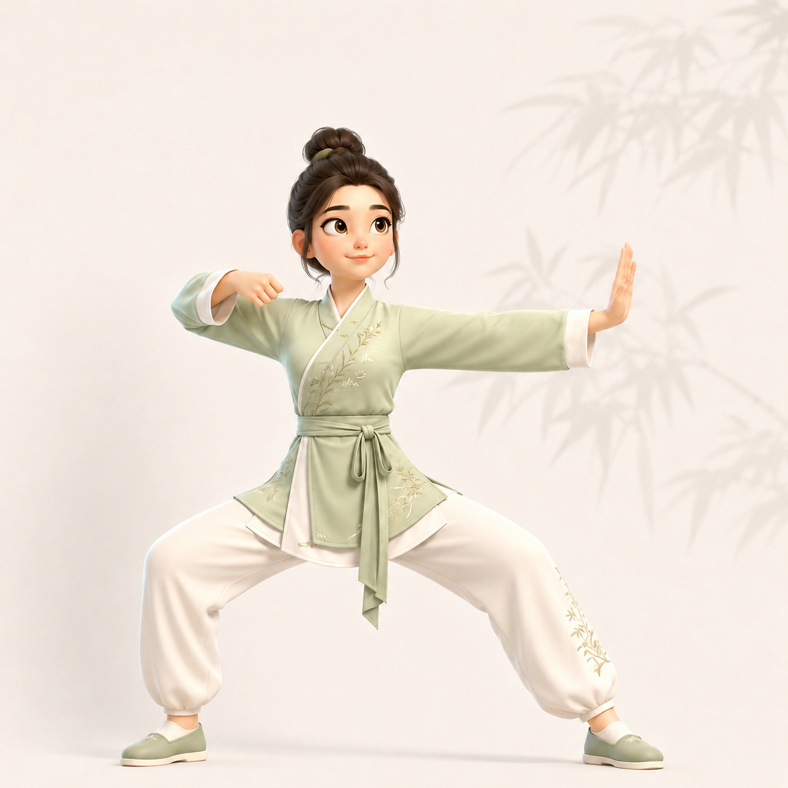
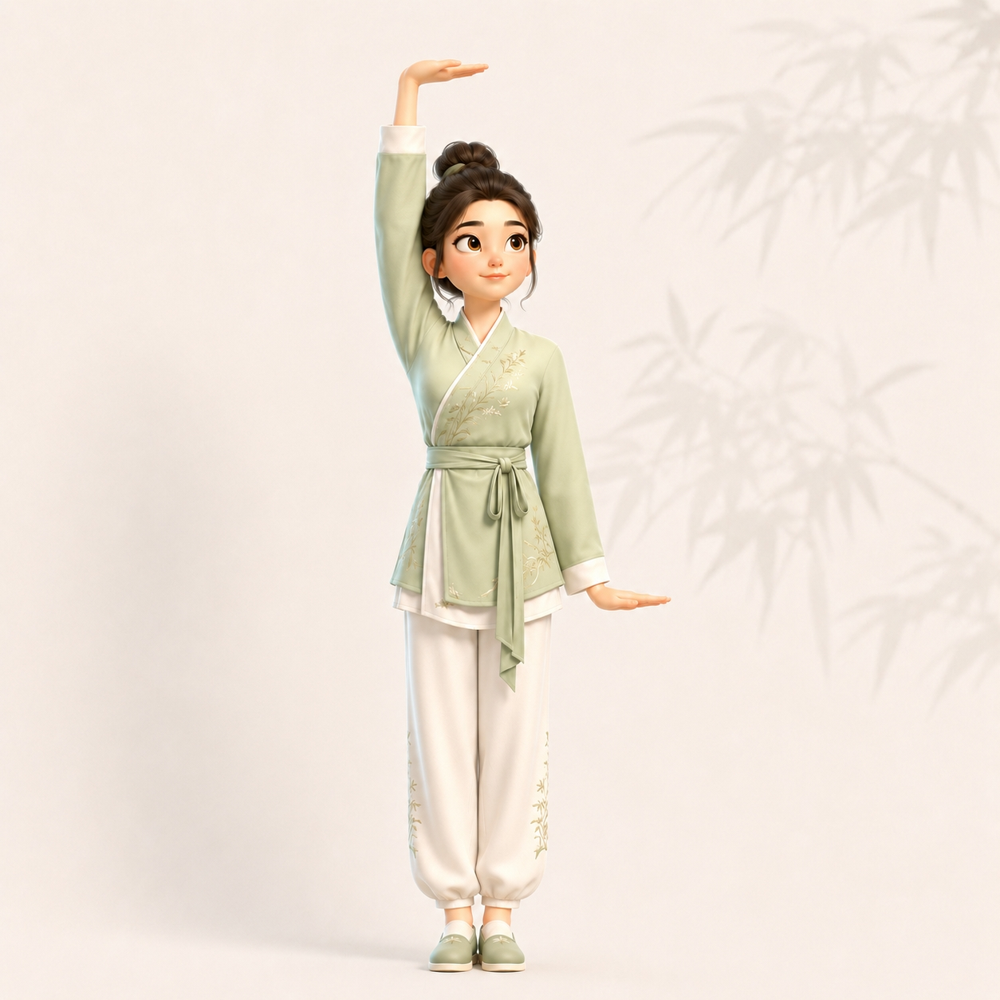
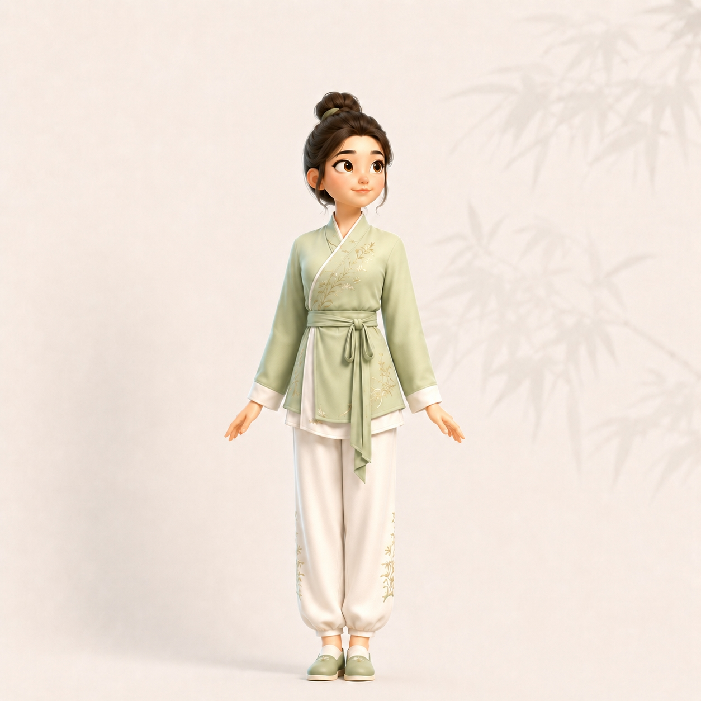
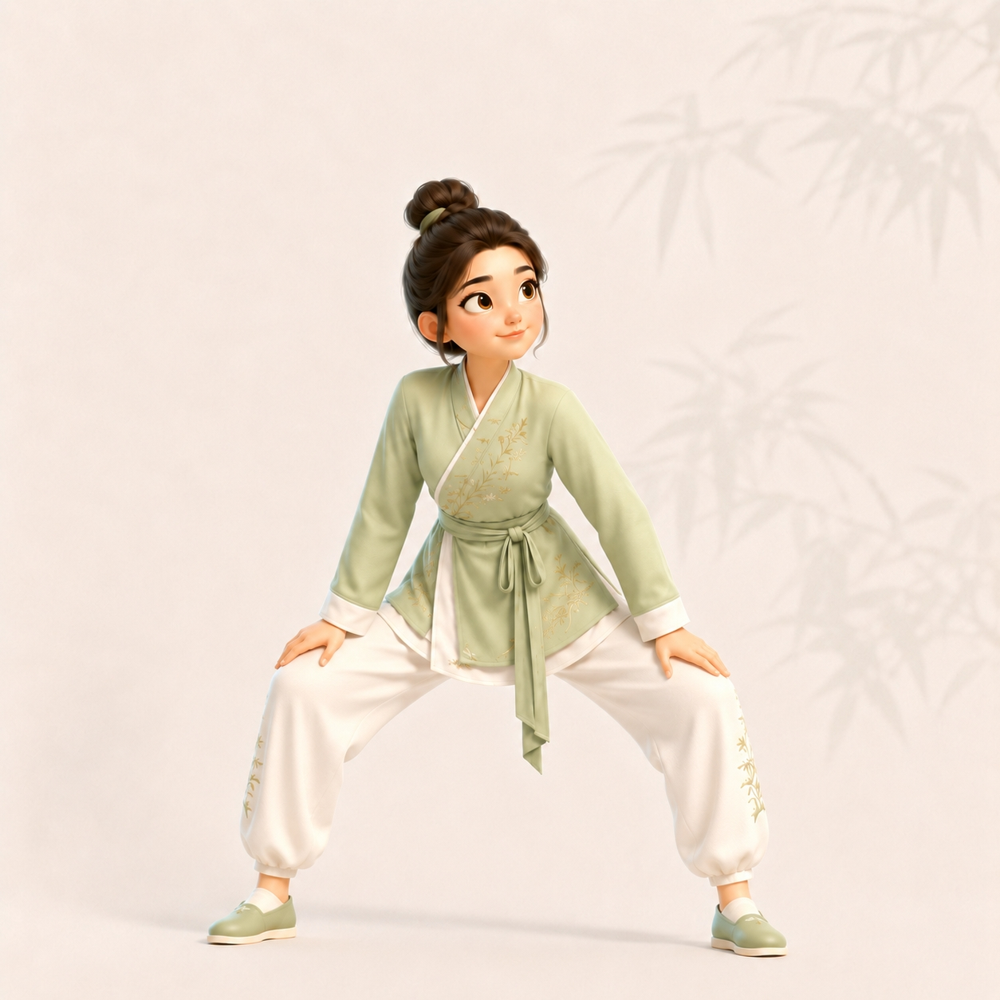
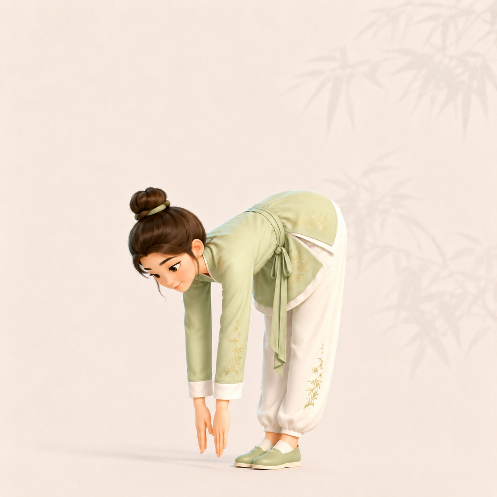
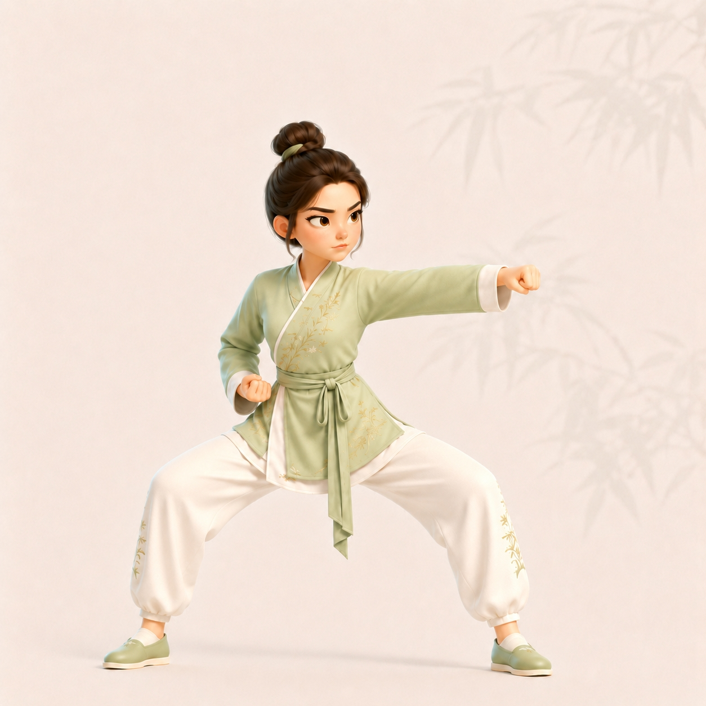
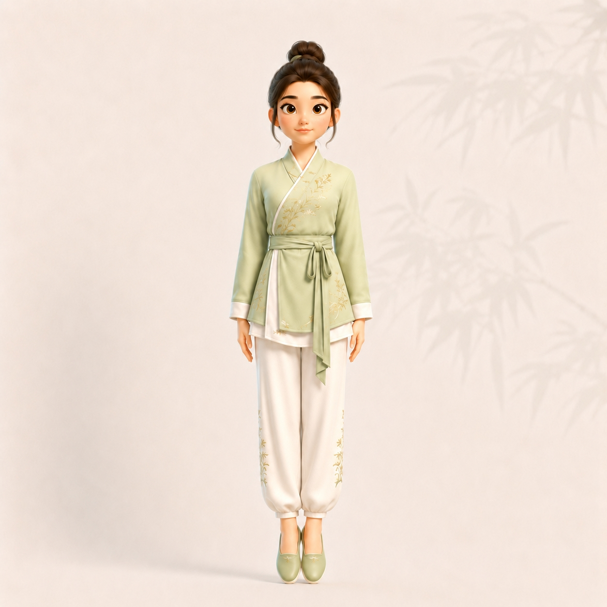

Calm your mind and regulate your QiQi (Chi) refers to the vital life force or energy flow in traditional Chinese medicine..
🎧 Audio Guide:

Ensure your body is relaxed. Click Next Page to begin.
Section 1: Two Hands Lift Up the Sky (两手托天理三焦)
🎯 Target: Triple Burner (Sanjiao)
Steps Breakdown:
Lift both palms upward to chest level.
Push palms up; straighten elbows and tuck chin. This regulates the Triple BurnerThe Triple Burner (Sanjiao) refers to the passage for fluid and energy distribution in the human torso..
Lower arms to sides; relax the body.
🎧 Audio Guide:

⚠️ Posture Self-Check
Avoid: Shrugging your shoulders or forgetting to look up at your hands.
Correct: Keep your shoulders relaxed and pressed down while pushing your palms up. Tilt your head back naturally to see your hands.
🧘 Step 1: Movement & Breath Synchronization
Movement Target:
Complete 3 full repetitions. Sync breathing: Inhale when pushing up, Exhale when lowering.
Teacher visually confirms your 3 repetitions in the physical classroom.
🧠 Step 2: Cognitive Check
Where should you feel the stretch primarily?
📋
Step 3: Peer Assessor
Observe and verify your partner's form.
Observe your partner's form directly in the classroom.
💡 Coach's Eye: Watch their shoulders. Make sure they stay relaxed while the arms extend up.
✅ Observation logged! You may now proceed to the next section.
Section 2: Drawing the Bow (左右开弓似射雕)
🎯 Target: Lungs & Heart
Steps Breakdown:
Shift your weight and step into a wider horse stance.
Pull one hand back to the shoulder while pushing the other palm forward, like drawing a bow.
Keep your shoulders relaxed and sink your QiQi refers to vital energy. Sinking Qi means keeping your center of gravity low..
🎧 Audio Guide:

⚠️ Posture Self-Check
Avoid: Leaning your torso forward or raising your shoulders.
Correct: Keep your torso upright and straight. Open your chest fully while pulling the "bowstring".
🧘 Step 1: Movement & Breath Synchronization
Movement Target:
Complete 3 full repetitions. Sync breathing: Inhale when drawing the bow, Exhale when returning.
Teacher visually confirms your 3 repetitions in the physical classroom.
🧠 Step 2: Cognitive Check
What is the correct posture for your torso in this movement?
📋
Step 3: Peer Assessor
Observe and verify your partner's form.
Observe your partner's form directly in the classroom.
💡 Coach's Eye: Check their torso alignment from the side. They should not be leaning forward when drawing the bow.
✅ Observation logged! You may now proceed to the next section.
Section 3: Single Arm Lift (调理脾胃须单举)
🎯 Target: Spleen & Stomach
Steps Breakdown:
Extend your knees and stand upright.
Lift one palm upward to the sky while pressing the other palm downward.
This opposing stretch vertically regulates the Spleen and StomachThese organs govern digestion and nutrient absorption in TCM..
🎧 Audio Guide:

⚠️ Posture Self-Check
Avoid: Bending your elbows too much or leaning your spine to one side.
Correct: Feel the opposing forces stretching up and down simultaneously. Keep your spine perfectly aligned.
🧘 Step 1: Movement & Breath Synchronization
Movement Target:
Complete 3 full repetitions. Sync breathing: Inhale as hands separate (up/down), Exhale as they return.
Teacher visually confirms your 3 repetitions in the physical classroom.
🧠 Step 2: Cognitive Check
What should your two hands be doing?
📋
Step 3: Peer Assessor
Observe and verify your partner's form.
Observe your partner's form directly in the classroom.
💡 Coach's Eye: Look at their palms. They should be pushing completely flat in opposite directions.
✅ Observation logged! You may now proceed to the next section.
Turn head gently to look backward. This helps prevent the Five StrainsTraditional term for physical/emotional fatigue caused by overwork or negative emotions..
🎧 Audio Guide:

⚠️ Posture Self-Check
Avoid: Turning your entire body (shoulders and hips) to look back.
Correct: Keep your chest facing forward. The twist should primarily happen in your neck and upper spine.
🧘 Step 1: Movement & Breath Synchronization
Movement Target:
Complete 3 full repetitions. Sync breathing: Inhale as you look back, Exhale as you return forward.
Teacher visually confirms your 3 repetitions in the physical classroom.
🧠 Step 2: Cognitive Check
Which part of your body is the primary focus of the twist?
📋
Step 3: Peer Assessor
Observe and verify your partner's form.
Observe your partner's form directly in the classroom.
💡 Coach's Eye: Keep an eye on their chest. The twist should be isolated to the neck, not turning the whole torso.
✅ Observation logged! You may now proceed to the next section.
Section 5: Sway Head and Shake Tail (摇头摆尾去心火)
🎯 Target: Heart & Nervous System
Steps Breakdown:
Sink into a horse stance with hands resting on thighs.
Lower your torso and twist from side to side.
This circular motion effectively calms the Heart FireRefers to excess stress, anxiety, or restlessness in TCM..
🎧 Audio Guide:

⚠️ Posture Self-Check
Avoid: Moving only your neck while keeping your waist stiff.
Correct: The swaying motion must originate from your waist and tailbone, traveling like a wave up your spine.
🧘 Step 1: Movement & Breath Synchronization
Movement Target:
Complete 3 full repetitions. Sync breathing: Exhale as you sway down, Inhale as you rise.
Teacher visually confirms your 3 repetitions in the physical classroom.
🧠 Step 2: Cognitive Check
Where should the swaying motion originate?
📋
Step 3: Peer Assessor
Observe and verify your partner's form.
Observe your partner's form directly in the classroom.
💡 Coach's Eye: Watch their lower body. The movement must start from the waist/hips like a whip, not just rolling the head.
✅ Observation logged! You may now proceed to the next section.
Section 6: Two Hands Hold the Feet (两手攀足固肾腰)
🎯 Target: Kidneys & Lower Back
Steps Breakdown:
Keep legs straight, bend forward from the waist.
Slide both palms down your legs toward your feet.
Rise smoothly. This strongly strengthens the lower back and KidneysIn Chinese Medicine, kidneys store vital essence and govern bone health..
🎧 Audio Guide:

⚠️ Posture Self-Check
Avoid: Bending your knees excessively or forcing yourself to touch your toes in pain.
Correct: Keep legs straight but soft. Bend from the hips, and only go as far as comfortably allowed.
🧘 Step 1: Movement & Breath Synchronization
Movement Target:
Complete 3 full repetitions. Sync breathing: Exhale as you bend down, Inhale as you rise up.
Teacher visually confirms your 3 repetitions in the physical classroom.
🧠 Step 2: Cognitive Check
What should you do if you cannot touch your toes?
📋
Step 3: Peer Assessor
Observe and verify your partner's form.
Observe your partner's form directly in the classroom.
💡 Coach's Eye: Check their knees. They should be straight but not forcefully locked, and they shouldn't bounce.
✅ Observation logged! You may now proceed to the next section.
Section 7: Clench Fists and Glare (攒拳怒目增气力)
🎯 Target: Liver & Muscular Strength
Steps Breakdown:
Sink into a stable horse stance.
Punch one fist forward slowly but with internal tension.
Perform an Angry GazeGlaring widely stimulates the liver meridian and releases frustration..
🎧 Audio Guide:

⚠️ Posture Self-Check
Avoid: Punching loosely or blinking during the punch.
Correct: Punch with intention (like moving through water) and maintain a wide, focused stare.
🧘 Step 1: Movement & Breath Synchronization
Movement Target:
Complete 3 full repetitions per arm. Sync breathing: Exhale as you punch forward, Inhale as you retract.
Teacher visually confirms your 3 repetitions in the physical classroom.
🧠 Step 2: Cognitive Check
Why do we use an "angry gaze" in this movement?
📋
Step 3: Peer Assessor
Observe and verify your partner's form.
Observe your partner's form directly in the classroom.
💡 Coach's Eye: Look at their eyes and the resting fist. The gaze should be intense, and the fist at the waist tightly clenched.
✅ Observation logged! You may now proceed to the next section.
Section 8: Heel Lifting (背后七颠百病消)
🎯 Target: Full Body & Immune System
Steps Breakdown:
Lift both heels upward as high as comfortable.
Drop both heels lightly to the ground to produce a gentle vibration.
This gentle resonance helps to Shake off illnessesClears blockages in meridians and stimulates the immune system..
🎧 Audio Guide:

⚠️ Posture Self-Check
Avoid: Slamming your heels down violently, which can jar your brain or spine.
Correct: Drop them with a controlled release—firm enough to feel a vibration, but gentle enough to be safe.
🧘 Step 1: Movement & Breath Synchronization
Movement Target:
Complete 7 full repetitions. Sync breathing: Inhale as you lift heels, Exhale as you drop them.
Teacher visually confirms your 7 repetitions in the physical classroom.
🧠 Step 2: Cognitive Check
What is the correct way to perform the heel drop?
📋
Step 3: Peer Assessor
Observe and verify your partner's form.
Observe your partner's form directly in the classroom.
💡 Coach's Eye: Watch the impact. The drop should create a gentle resonance through the body, not a heavy, jarring slam.
✅ Observation logged! You may now proceed to the final section.
🎉 Congratulations!
You've Completed the Ba Duan Jin Masterclass
📖 Key Takeaways
Breathe: Use slow, stable breathing to support every movement.
Align: Focus on body alignment rather than speed or intensity.
Relax: Keep the shoulders relaxed and maintain a smooth weight shift.
Coach: Observation helps internalize your own physical awareness.
🌿 Wisdom of Qigong
"Where the mind goes, the Qi follows." (意到气到)
Ba Duan Jin is a moving meditation. Consistency is your greatest teacher. Dedicate just 15 minutes a day, and your body will thank you.
🗣️ Final Mission: Reflection Wall
Head over to our class Padlet to submit your evidence and finalize your peer evaluation. Please complete these 3 steps:
1. Upload Evidence: Share your video or online live screenshot.
2. Self-Reflection: Which movement helped YOU relax the most today?
3. Coach's Final Feedback: Based on your observation, what was your partner's strongest movement? What can they improve?
Images and instructional content adapted from original Ba Duan Jin teaching materials. Used with permission for educational purposes.